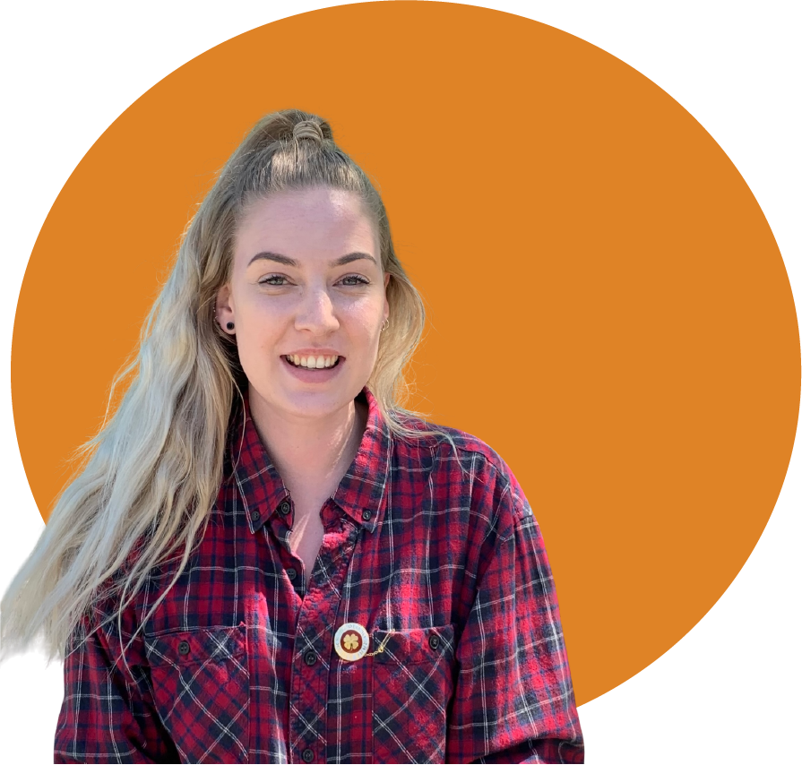
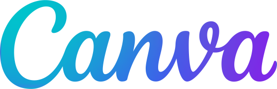

OM MIG
Jeg hedder Nanna og er 29 år. Jeg bor på Frederiksberg med min kæreste Mathias og snart bliver vi forældre for første gang. Til daglig går jeg på Multimediedesigner-uddannelsen på KEA.
Oprindeligt er jeg uddannet sygeplejerske i 2019, men efter et par år i den branche besluttede jeg mig for at prøve noget andet. Jeg har i mellemtiden både arbejdet som barista og som receptionist i en fysioterapeut-klinik.
Jeg elsker at være kreativ og er især glad for alt indenfor design, om det så er interiør, møde eller grafisk og visuel design. Derudover elsker jeg at fordybe mig i udviklingen af en digital løsning.

Programmer jeg kan bruge
